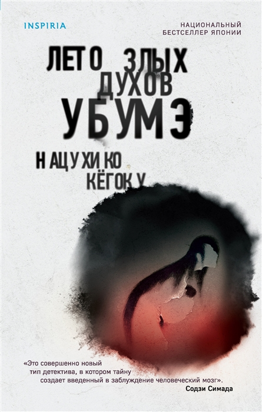
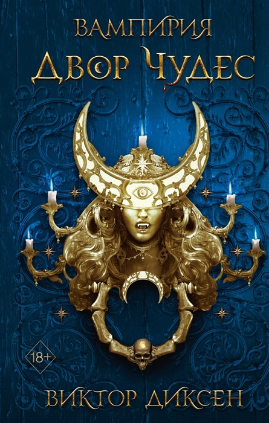

Роман — переосмысление судьбы женщин в древних Помпеях. История о том, как изменить обстоятельства, простить себя и обрести внутреннюю свободу.
- 
Пронизанный мистикой, эзотерикой и японским фольклором, это один из самых необычных романов в истории мирового детектива. Книготорговец-экзорцист и писатель столкнулись с абсолютно непостижимым преступлением.

История знакомит нас с парнем по имени Тандзиро и его семьёй. Шумные и невероятно счастливые, они скромно живут в горах и зарабатывают на пропитание продажей угля.
А вернувшись, находит родных мёртвыми.
-
Больше 30 лет человек под этим псевдонимом держал в страхе целый город. К счастью, именно это качество его и погубило.
-
Сумасшедший изобретатель Безумный Дейв, его племянница Патрисия и молодой искатель приключений Нейт Таймли пытаются отразить зомби в их родном городе. Их единственная надежда на спасение-армия растений.
- 
Здесь можно найти картины из жизни в Париже, побывать на улице Чердака Святого Лазаря, Зеленом мысе Бессониц, в питейном адресе комиссара Мегр и Каиновом сквере.